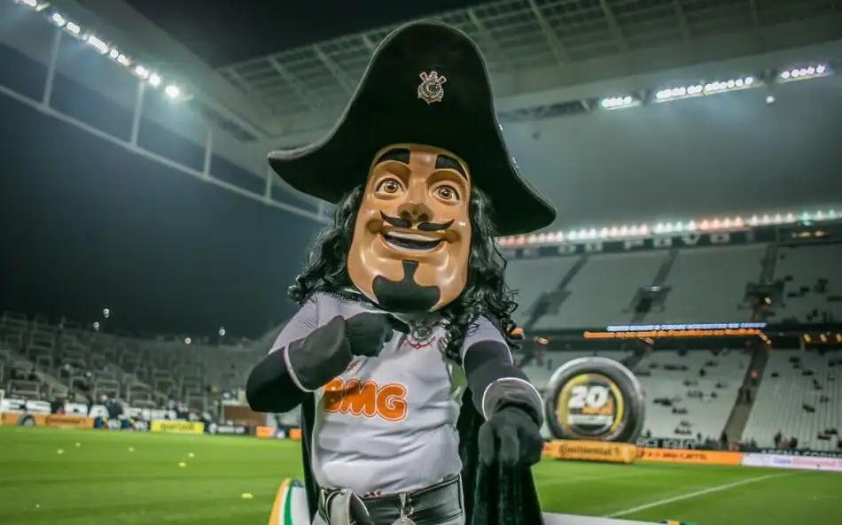

Clique nas perguntas abaixo para revelar os fatos mais curiosos sobre a história do SCCP.
🤺 Como surgiu o mascote Mosqueteiro?
O mascote foi adotado em 1929. Após vencer o Barracas, da Argentina, o jornal "A Gazeta" destacou a "fibra de mosqueteiro" dos jogadores. Além disso, no ano seguinte, o clube incorporou os esportes náuticos, e os remadores do clube adotaram oficialmente o espírito de "Um por todos e todos por um".
⚓ Qual a origem da âncora e dos remos no escudo?
O primeiro escudo do clube possuía apenas as letras C e P. Em 1939, o pintor modernista Francisco Rebolo (que também foi jogador do clube) redesenhou o escudo, adicionando a âncora e os remos vermelhos para homenagear os esportes náuticos praticados no Rio Tietê.
🏟️ De onde vem o apelido "Timão"?
Diferente do que muitos pensam, o apelido "Timão" não surgiu pelas grandes vitórias, mas sim em 1966! Naquela época, o clube vivia um jejum de títulos e fez contratações de peso (como Garrincha). Um jornalista, ao ver o elenco recheado de estrelas, publicou: Isso não é um time, é um Timão!.
🐉 Quem é o padroeiro do clube?
O padroeiro do Corinthians é São Jorge. A devoção começou após o clube comprar o terreno do Parque São Jorge (sede do clube) em 1926. A sede ganhou uma capela em homenagem ao santo guerreiro, que virou símbolo da fé e da luta corinthiana.

O Mosqueteiro, símbolo da raça e da união alvinegra.